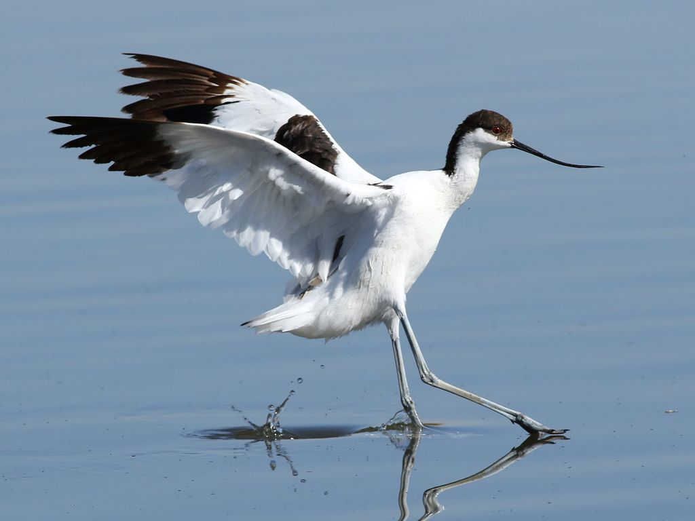

Ąžuolinė miegapelė (lot. Eliomys quercinus, angl. Garden dormouse, vok. Gartenschlafer, Eichelmaus) - miegapelinių (lot. Gliridae) šeimos graužikas. Į Lietuvos raudonąją knygą rūšis įrašyta nuo 1989 iki 2019 metų.
